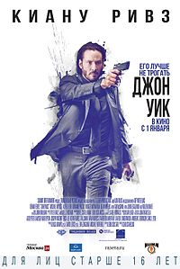

Топ-3 фильмов: "Начало" | "Джентельмены" | "Джон Уик"
Кликни сюда!
Режисер: Чад Стахелски, Дэвид Литч
Жанр:Боевик
Список основных Актеров:
| Сюжет | Фильм: "Джон Уик" | Костюм на нем сидит идеально. Оружие ложится в руку как родное. Сердце просит мести. И Киану Ривз готов изрешетить пулями весь город, чтобы достать наглеца, отнявшего у него последнюю радость в жизни. Все в городе знают, что перейти дорогу бывшему киллеру, завязавшему с криминалом после смерти жены, все равно, что подписать себе приговор. Джон Уик пытается бороться с депрессией, находя утешение в простых радостях: гоняет на машине, беседует с собакой и делает все, чтобы никогда не воспользоваться арсеналом, замурованным в пол своей спальни. Один зарвавшийся юнец захочет купить у Джона его крутую тачку и, получив отказ, заявится среди ночи, заберет желаемое и убьет ни в чем не повинного пса. И вот тут Джон сорвет с себя мягкую пижаму и снова станет тем, кого все так боятся. Слух о том, что Джон Уик вернулся, распространится по городу со скорость искры на бикфордовом шнуре. Соль интриги в том, что мишень, которую наметил себе уязвленный киллер, приходится сыном одному влиятельному гангстеру, а значит, масштабного кровопролития не избежать. |